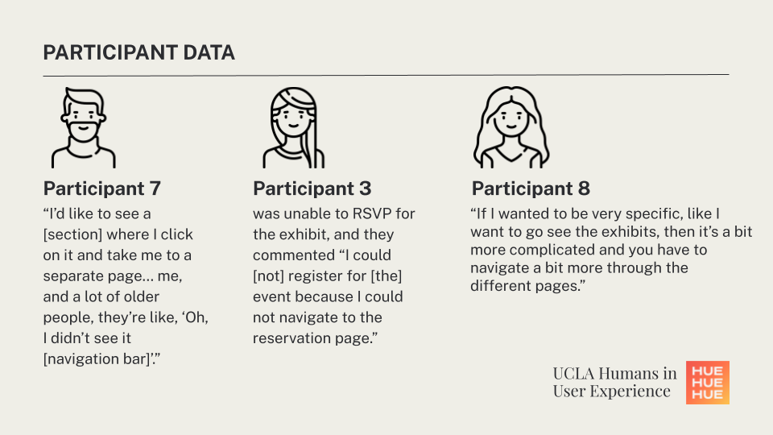

| Role | Team | Tools | Timeline |
|---|---|---|---|
| UX Researcher | James Y. | Google Sites | Phase 1: Oct '22 - May '23 |
| Data Analyst | Lindsay H. | FigJam | Phase 2: Jun '23 - Sep '23 |
| UX Writer | Victoria L. | UsabilityHub | |
| Sookie C. |
Preserving the barrios, or neighborhood, is the mantra of La Historia Historical Society, a nonprofit organization that is the heart of El Monte’s Mexican American history and culture. It's a place where every artifact holds the key to unraveling tales and legacies of its community.
How can we share this rich history to a wider audience?
Well, La Historia Historical Society Museum (LHHSM) has its own website that we can leverage to draw more people in.
A Fixer-Upper
Starting in September 2022, UCLA Humans in User Experience (HUE) worked with La Historia to revamp their website, paying special attention to:
- La Historia’s mission of centering and amplifying silenced narratives
- La Historia’s varied audience, which includes high school students, people unaware of local history, and older people with less technological experience
- La Historia’s financial and staffing situation, especially after the peak of the COVID-19 pandemic
Our research question started coming together...
La Historia Museum aims to connect with its community by engaging with visitors, donors, and staff. How can we enhance this engagement through an online experience that is usable, accessible, and representative of the organization?
A round of research including: heuristic evaluation, pilot usability tests (UT), field research, and more were conducted, ultimately leading to the initial prototype.
Here’s where Lindsay (my partner in crime) and I joined the story.
Our Objectives
We were recruited by HUE to initiate the second round of user research with the current prototype.
- Identify and investigate the sources of user pain points with the current prototype
- Qualify user behavior and flow with the prototype
- Receive and integrate from La Historia Historical Society on the prototype
- Determine solutions for each pain point based on user observations and feedback, and update the prototype accordingly
User Research Part II: Return of the UTs
We conducted 10 moderated (a mix of in-person and virtual) usability test sessions to assess the website’s updated design, information architecture, and user flow from the perspective of La Historia organization and community members.


With hours and hours of recordings to scour through, we meticulously documented verbal and nonverbal behaviors, timestamps, and task completion of each participant. This is what we discovered:
01. People want clarity with terminology and a warm, inspiring tone in copies
02. There’s a lot of confusion during the process to contribute personal artifacts to the museum
03. Time is money and the website lacked efficiency
04. It’s hard to find call to action elements and figure out the next step in user navigation
leftSome Number Crunching…
To back up our qualitative data, we did some quantitative analysis and the summary is below.
**Satisfaction = Mean combined rating across three post-task measures: perceived ease of use, efficiency, and likelihood of completing the task outside a testing environment. 3 for highly satisfactory, 0 for unsatisfactory, and -3 for highly dissatisfactory.
Task 3 required participants to undergo a process of donating and describing a photo to LHHSM through a Google Form. Task 3 took the longest time to complete (mean = 466 seconds) and had the lowest satisfaction rating. While most participants agreed (i.e., agree or strongly agree) the website was easy to use (70%), only 40% of participants agreed they would use the website frequently.
It seems like we have a few issues to address with this prototype…
Check-in Time!
We were invited by the LHHSM stakeholders to visit the museum and this was the perfect chance to update them with our progress. We presented our findings and gained insight about what they needed.
“Even if we have a beautiful website, it won’t do us any good if it's not manageable and the functionality of forms and such aren’t efficient.”
We brought this concern back to the team and project lead, as well as addressing the pain points we discovered in the data. After bouncing ideas and solutions off of each other, we left with action items to tackle.
So, What Changed?
We were able to consolidate all of the pain points under two categories: terminology & instruction and navigation.
01. Terminology & Instruction
Across all tasks, slight language and presentation changes could significantly improve site clarity and functionality.
1A: (Task 3) Instructions need to be clear.
We suggested clarifying the donation process, stating that all users should complete the form and expect to receive further contact from the museum on how they will send their materials. We suggested including all of these instructions in the Google Form, and condensed the form so it’s only 2 sections (compared to the previous 12 pages!).
1B: (Task 3) Exhibitions Page should encourage users to get involved.
Our proposed solution added a leading statement to emphasize the uniqueness of each exhibit. This ranged from subheadings to grab the attention of users, questions to prompt a potential action (e.g., donating a photo, getting in touch with LHHS, or visiting the exhibit in person), etc.
02. Navigation
Usability could be improved by strategically placed call-to-action elements, presenting users with another pathway of a more localized navigation experience, instead of only relying on the navigation bar.
This encourages a seamless exploration of related content, ultimately creating a natural journey throughout the website. The design not only creates more exposure to other pages but also provides users with clear, relevant next steps to follow.


2A: Support Page
We added a section to showcase results of donating or supporting to help users visualize their impact and encourage/incentivize them to contribute. The “See Your Contributions in Action!” button leads to the Exhibitions page that contains all the collections to which the donations are attributed to (and more artifacts!). This section can also include more behind the scenes images of digitizing photographs, setting up collections within the museum, etc.
2B: About Page
We proposed adding a “Support Us” section to the bottom of the About page to provide users with a next step to follow when they finish learning about LHHSM. This leads to more exposure to the ways to contribute to the museum, as well as expanding on the feeling of trustworthiness of the organization and inciting excitement to help.
Passing the Torch
The latest prototype has been shipped to LHHSM! We also sent over several documents (thanks, Victoria!) summarizing how to update the site with videos/pictures and other functionalities. This should help ease the worries that LHHSM had and be a resource to train future website staff/volunteers.
In the meantime, the HUE team is still here to assist in making the transition as smooth as possible.
As I reflect on my experience with this project, it was so exciting to be able to speak with people so passionate about their community and culture. If you have the chance to attend, La Historia is having an event, The Fabric of a Community, exhibiting generations of Mexican American fashion in El Monte.
Adiós and until next time,


Next Project!

Finding an effortless approach to astronomy for beginners.
Designed + Coded with ♥️ in Los Angeles